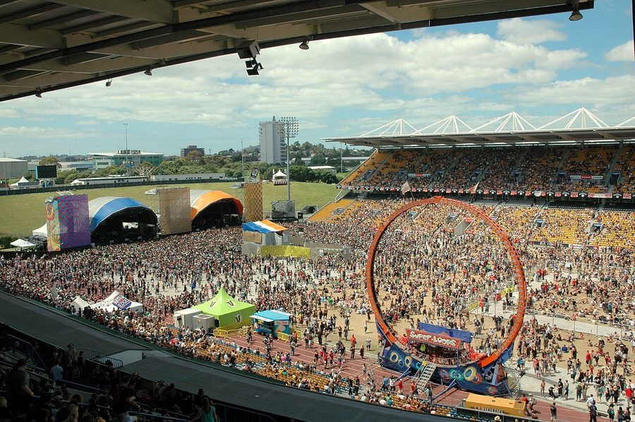

Big Day Out ‘flag ban’ ignites ruckus



Following reports of anti-social behaviour at last year’s Australia Day Big Day Out event in Sydney, organisers have asked punters to leave their Australian flags at home – leading to foot stamping from everyone from NSW Premier Morris Iemma all the way up to Prime Minister John Howard himself. The controversy stems from a report in the Sunday Telegraph yesterday that claimed any flag or bandana bearing the national symbol would be confiscated at the gate on Thursday.
BDO head honcho Ken West was quoted as wishing to avoid the nationalistic overtones of last year’s Australia Day event in Sydney, which came shortly after the racial tension ignited at the Cronulla riots late in the previous year. West claimed the behaviour at the 2006 event was partly what motivated him to move this year’s event away from Australia Day.
“The Australian flag was being used as gang colours. It was racism disguised as patriotism and I’m not going to tolerate it. I am telling people not to bring (flags) – they are free to get them out at midnight on their way home when it is Australia Day.”
The story provoked a chorus of disapproval that stretched across both sides of politics. NSW Premier Morris Iemma labeled the decision as “ridiculous” and called for organisers to reverse the decision immediately. “Our flag ought not to be used to be making political points like this… The flag is a symbol of national unity and pride,” Iemma told Macquarie Radio.
Prime Minister John Howard called for the Sydney Big Day Out to be cancelled unless the organisers backed down, and RSL national president Bill Crews gave his support to this notion when he weighed in on the debate. “We’d certainly support that approach if they don’t want to change their mind on the banning of the flag,” he told the Nine Network. “This is an incredible decision that I hope organisers will quickly change. It’s an unbelievable thing that you ban Australia’s national symbol at any event in Australia.”
Federal Opposition Leader Kevin Rudd also felt compelled to throw in his two cents. “Organisers have got it plain wrong when they try to hide our flag as if it’s some symbol of shame. It’s not. We should fly it with pride. When you have any national event organiser in this country describing the Australian national flag as, quote, a gang colour, then I don’t know what sort of country we live in any more,” Rudd told Channel Nine.
Amid all the ruckus, the organisers of the Big Day Out claim they never even instituted a ‘flag ban’ in the first place, attributing it to a beat up on the part of the Telegraph. In a statement issued to clarify their position, it was labeled, “a request, not a command.”
“Contrary to the reports in the media, it was never our intention to disrespect the symbolism of the Australian or any other flag. In recent times, there has been an increased incidence of flags brandished inconsiderately and this has led to increased tension. Our only goal in discouraging this activity at the Big Day Out is to ensure that our patrons are not subjected to or inconvenienced by this behaviour.
“We have no problem with people being patriotic, and we certainly do not have a problem with people wearing or displaying what they feel is important. Regardless of how it has been interpreted, this is about audience safety and enjoyment.”
Organisers have requested that punters leave their flags at home this year, insisting the Big Day Out is not an Australia Day event but rather a music festival showcasing artists from around the world, aspiring to unify people through music.